السلسلة 23
السيارة (صنف B) · 40 سؤال. كل سؤال فيه الصورة والصوت. اختار الجواب (ولا جوج إلا كانو صحاح)، ورك على «تأكيد» باش تشوف واش صبتي.
- 40سؤال
- 32باش تنجح
- 1 – 4جواب واحد ولا أكثر
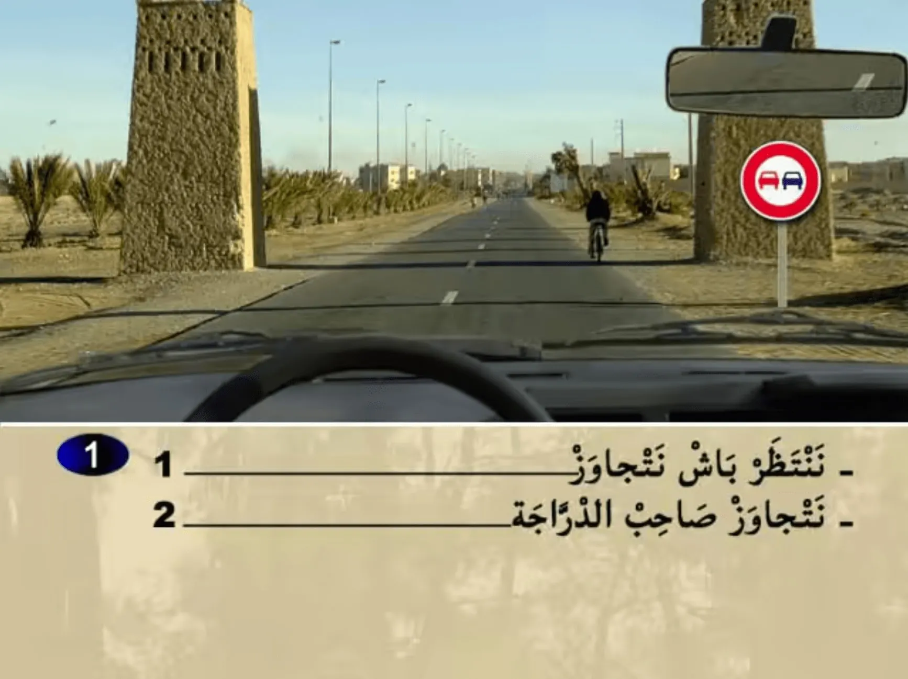
الكلافيي: 1–4 للجواب، Enter للتأكيد وللسؤال الجاي.
السلسلة 23 · النتيجة ديالك
0 / 40
السلسلة 23
السيارة (صنف B) · 40 سؤال، بالصوت، مع الجواب الصحيح والشرح.
السؤال 1
بيّن الجواب
الجواب الصحيح: 2
العلامة الطّرقية تمنعني من تجاوز العربات التي لديها 4 عجلات فقط، في هذه الحالة يمكنني تجاوز صاحب الدرّاجة بما أن الخط متقطّع والمنع لا يخص الدرّاجة في هذه الحالة.
السؤال 2
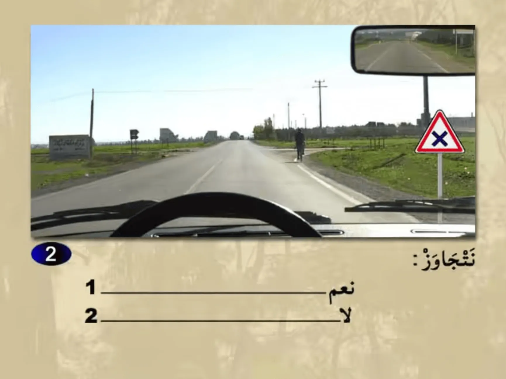
بيّن الجواب
الجواب الصحيح: 2
لا يمكننا التجاوز الان، الإشارة الطرقية تعلمنا على وجود ملتقى الطرق وفي ملتقيات الطرق ممنوع علينا التجاوز، أيظا يوجد الخط المتّصل والذي يمنعنا من عملية التجاوز أيظا.
السؤال 3
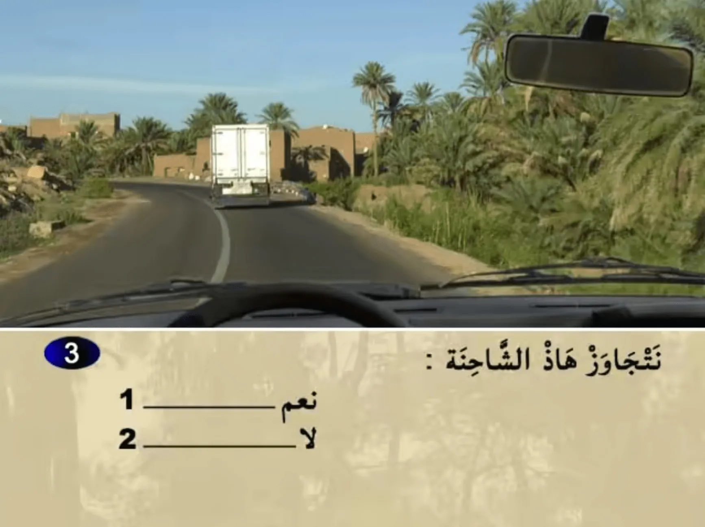
بيّن الجواب
الجواب الصحيح: 2
لا يمكننا تجاوز الشاحنة الان، أولا نحن متواجدين في مُنعرج، وثانيا يوجد خط متصل يمنعنا كذلك من عملية التجاوز.
السؤال 4
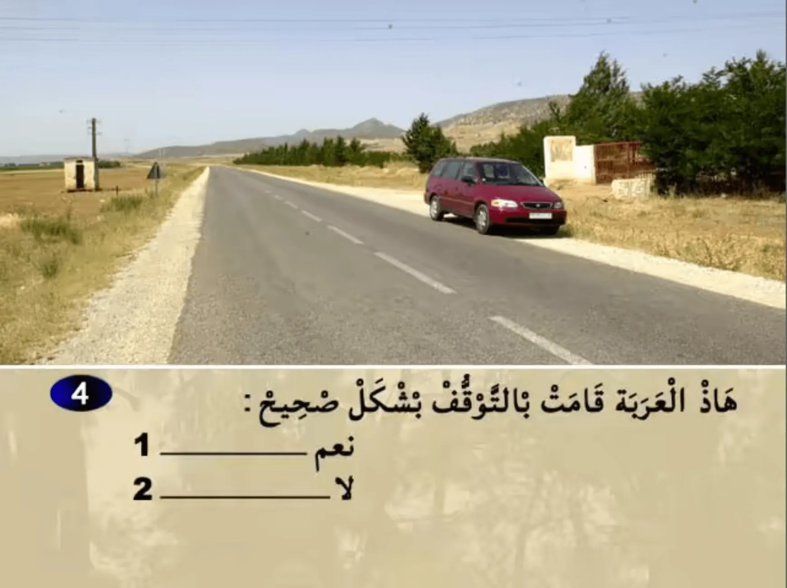
بيّن الجواب
الجواب الصحيح: 2
هذه العربة لم تقم بعملية التوقف بطريقة صحيحة، لأن العملية الصحيحة للتوقف هي أن تكون جميع عجلات العربة خارج الطّريق الرئيسية، وفي هذه الصورة يظهر على أن العجلات مازالت في الطّريق، لذلك عملية التوقف غير صحيحة.
السؤال 5
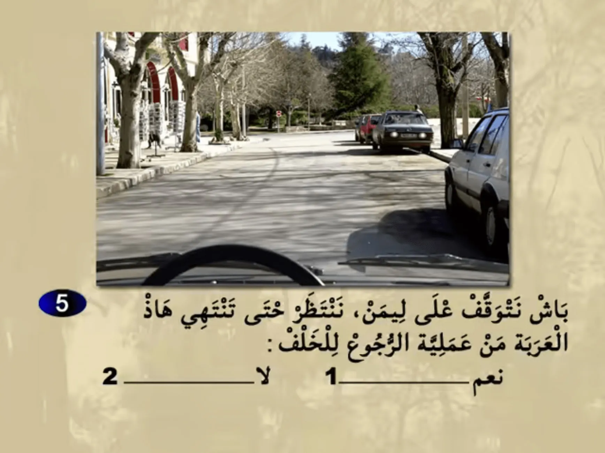
بيّن الجواب
الجواب الصحيح: 1
بطبيعة الحال، لكي أقوم بعملية التوقف على الجهة اليمنى، فيجب عليّ أن أنتظر إلى حين أن تنتهي العربة التي أمامي من عملية الرجوع للخلف وبعد ذلك يمكنني التوقف على الجهة اليمنى (لو أردت التوقف والعربة ترجع للخلف فيمكن أن يحدث تصادم وحادثة، لذلك يجب علي الإنتظار).
السؤال 6
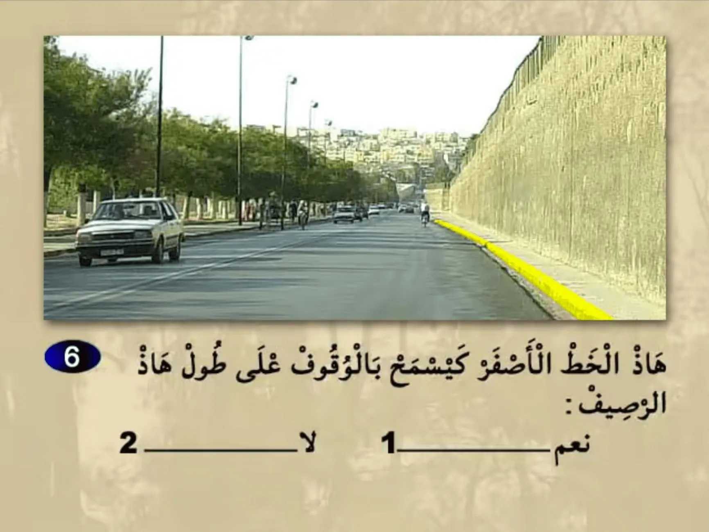
بيّن الجواب
الجواب الصحيح: 2
بالنسبة لهذا الخط الأصفر المتّصل فهو يمنع عملية الوقوف والتوقّف على طول الرّصيف.
السؤال 7
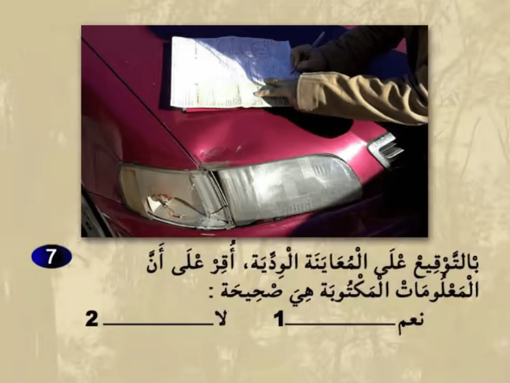
بيّن الجواب
الجواب الصحيح: 1
بعد التّوقيع على المعاينة الودّية فهذا يعني أنني موافق وأُقر على أن جميع المعلومات التي أمضيت عليها في المعاينة الودّية صحيحة.
السؤال 8
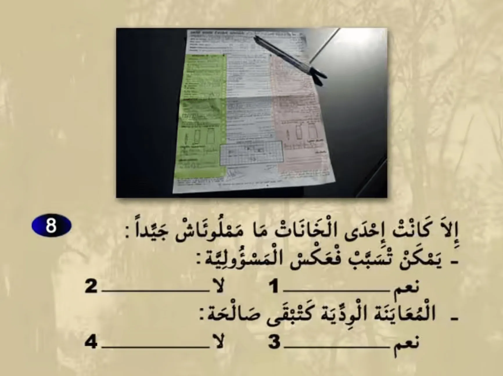
بيّن الجواب
الجواب الصحيح: 1 و 3
قبل التوقيع على المعاينة الودّية فيجب عليّ أن أتأكد على أنني قمت بملئ جميع الخانات بشكل صحيح، لأنه أي خطأ في ملئ المعاينة الودّية فقد يُسبب في عكس المسؤولية. بعد التوقيع على المعاينة الودّية فهي تبقى صالحة.
السؤال 9
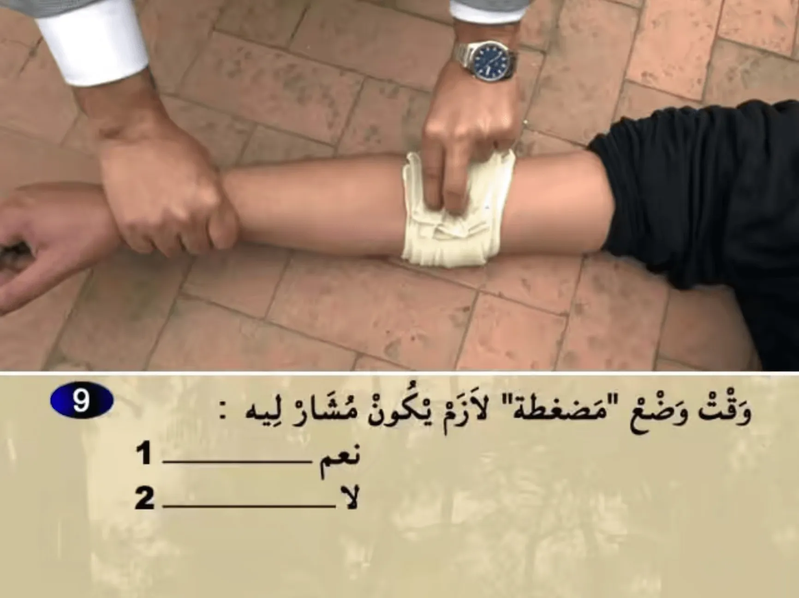
بيّن الجواب
الجواب الصحيح: 1
في حالة وضع شخص مَضغطة لمُصاب فيجب على الشخص الذي وضع المَضغطة أن يشير إلى الوقت الذي قام بوضع هذه المَضغطة للمصاب.
السؤال 10
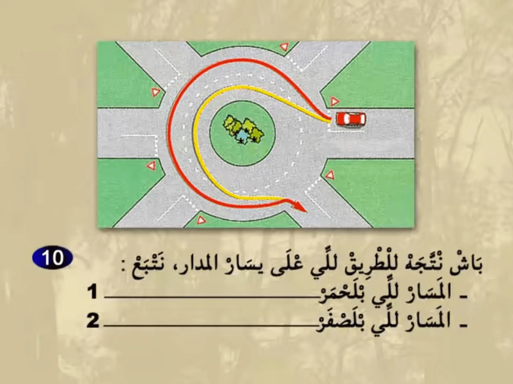
بيّن الجواب
الجواب الصحيح: 2
بما أنني أريد أن أتَّجه للطريق اليسرى في المدار فيحب عليّ أن أقوم بإتباع المسار الأصفر. (المسار الأحمر نَتَتبع مَساره لو كنا نريد أن ننعطف على اليمين أو أن نسير مباشرة) لكن بما أننا نريد أن نتّجه للطريق اليسرى في المدار فيجب علينا إتباع المسار الأصفر.
السؤال 11
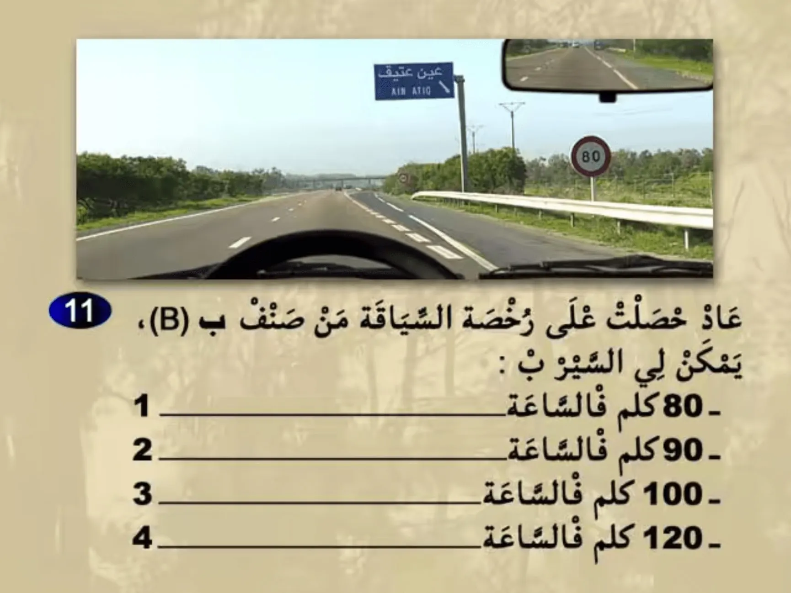
بيّن الجواب
الجواب الصحيح: 1 و 2
عاد حصلت على رخصة السياقة من صنف ب (B) (يعني أنني في الفترة التّجريبية والتي تَمْتد لعامين) في هذه الحالة السرعة القصوى التي يمكنني السير بها هي سرعة 90 كلم في الساعة،أيظا يمكنني السير بأقل من 90 كلم في الساعة، يمكنني السير مثلا ب 80 كلم في الساعة أو 60 كلم في الساعة... بالنسبة للعلامة الطرقية الخاصة بتحديد السرعة في 80 كلم في الساعة فهي خاصة بالعربات التي سوف تقوم بتغيير المسلك إلى التباطئ ولا تعنيني.
السؤال 12
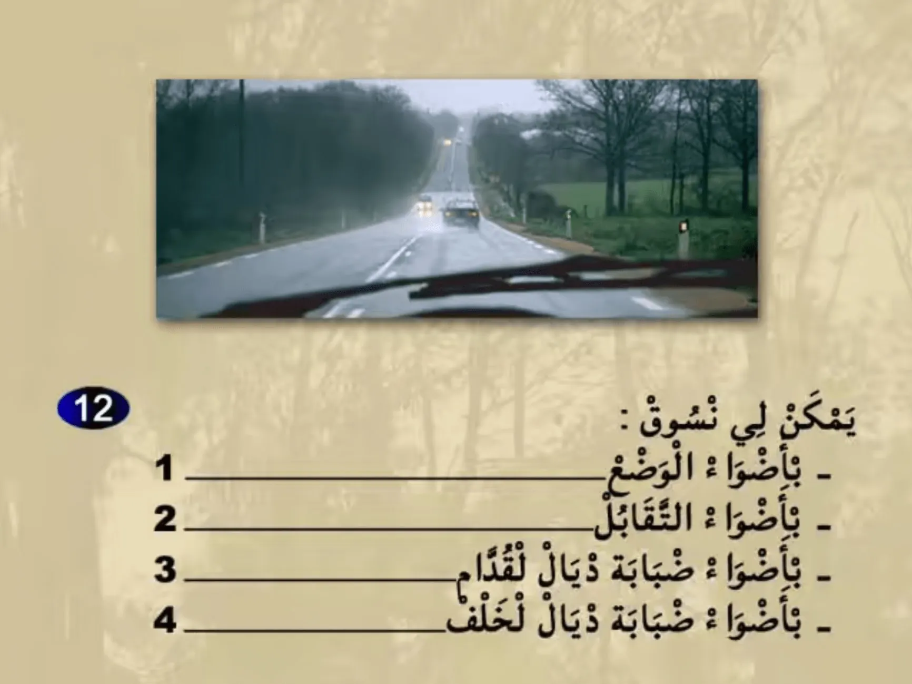
بيّن الجواب
الجواب الصحيح: 1 و 2 و 3
في هذه الحالة أثناء هطول الأمطار، نقوم بالسّير بإستعمال أضواء التّقابل وأضواء الضباب الأمامية، بالاضافة لإمكانية إستعمال أضواء الوضع مع أضواء التقابل او الضبابة، .
⚠️ ملاحظة: يمكن استعمال أضواء الوضع في آن واحد مع أضواء الطريق وأضواء التقابل والأضواء الخاصة بالضباب، ويمكن كذلك استعمالها وحدها عند وقوف المركبة أو توقفها أو عندما تكون ظروف الإنارة على الطرق، ماعدا الطريق السيار أو الطرق ذات المسالك الخاصة. الجواب الصحيح هو رقم 1، 2 و 3.السؤال 13
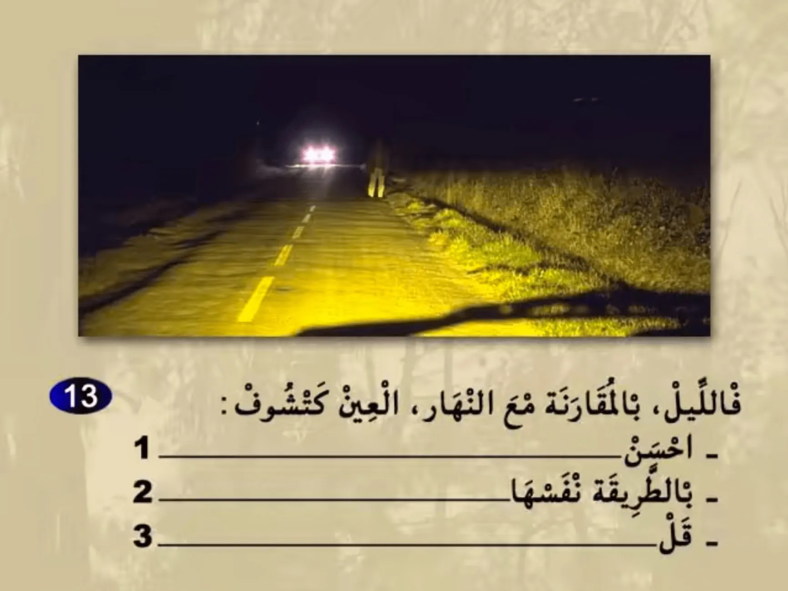
بيّن الجواب
الجواب الصحيح: 3
في الفترة الليلية تكون الرؤية صعبة قليلا على عكس الفترة الصباحية التي تكون فيها الرؤية واضحة أثناء السير. إذن العين ترى أقل في الليل.
السؤال 14
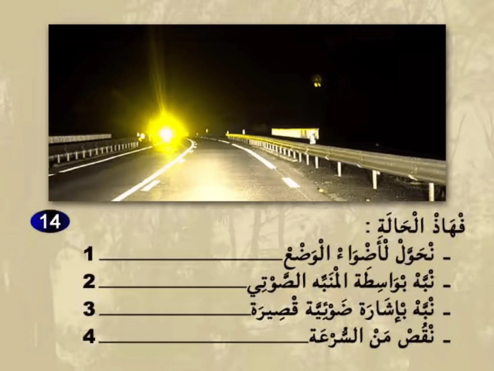
بيّن الجواب
الجواب الصحيح: 3 و 4
في الفترة اللَّيْلية وعند التقابل مع عربة لا نستعمل أضواء الوضع لأننا لا نقود بهم خارج المدينة، ولا نقوم أيظا بإستعمال المنبّه الصوتي لأنه ممنوع إلاّ في الحالات التي فيها خطر. والتنبيه بإشارة ضوئية قصيرة فيمكننا ذلك لكي تقوم العربة التي في الإتجاه المعاكس بتغيير أضواء الطريق التي تستعملها وأيظا لكي أُنَبِهَها على وجودي، وبطبيعة الحال أقوم بالإنقاص من السرعة.
السؤال 15
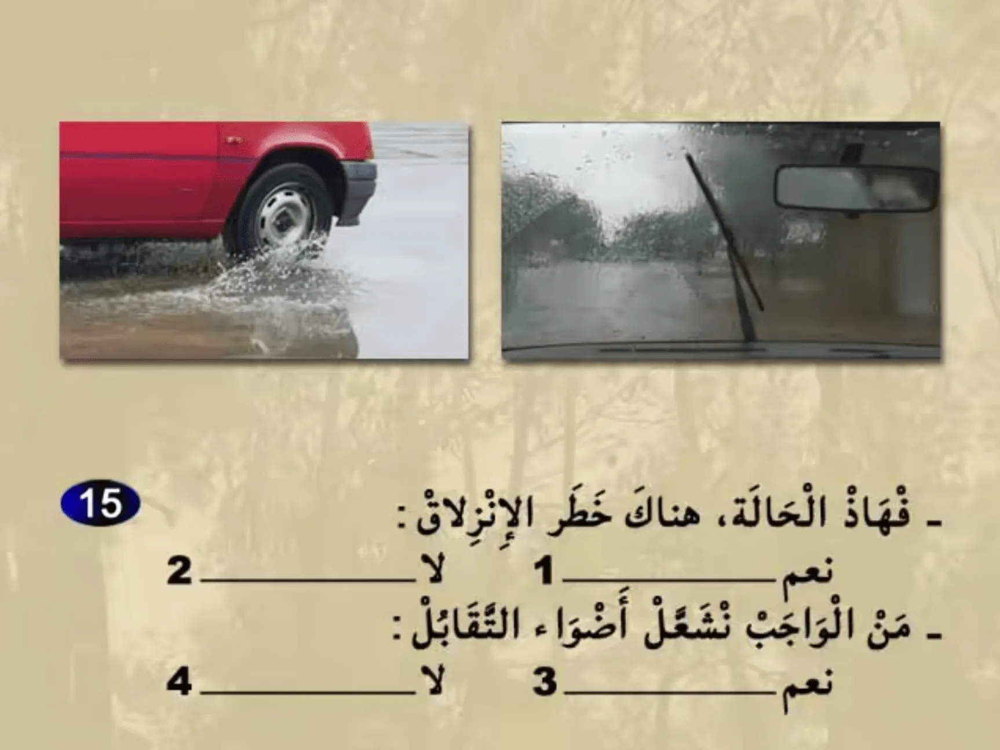
بيّن الجواب
الجواب الصحيح: 1 و 3
توجد تساقطات مطرية والأرض مبَلّلة إذن يوجد خطر الإنزلاق. وعند القيادة وهطول الأمطار فيجب علينا إستعمال أضواء التّقابل (وأضواء الضباب الأمامية).
السؤال 16
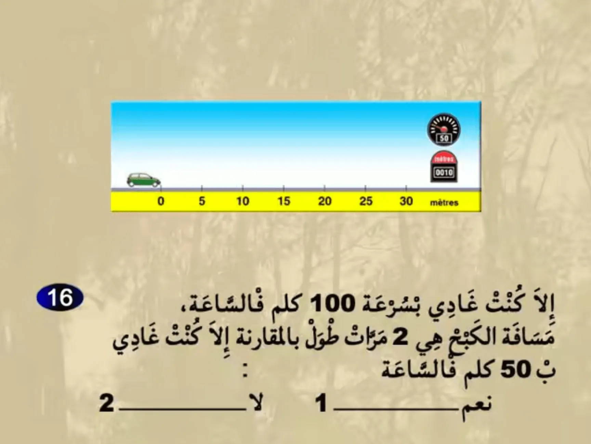
بيّن الجواب
الجواب الصحيح: 2
مسافة الكبح هي المسافة بين لفران ( الضغط على الفرامل ) ووقوف السيارة. إذن مسافة الكبح إذا كنت أسير بسرعة 100 كلم في الساعة ليست أطول ب 2 مرات لو كنت أسير بسرعة 50 كلم في الساعة. ليس شرط.
السؤال 17
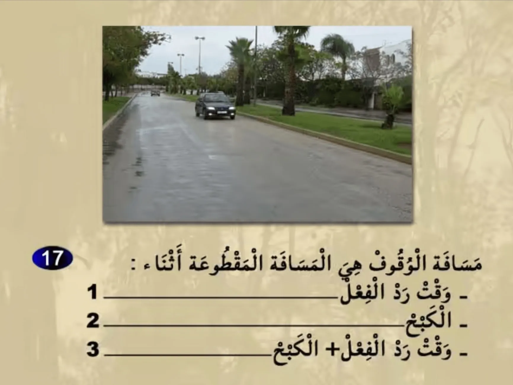
بيّن الجواب
الجواب الصحيح: 3
مسافة الوقوف: هي مسافة وقت رد الفعل + مسافة الحصر، والحصر هو ( الفرملة أو الكبح ).
السؤال 18
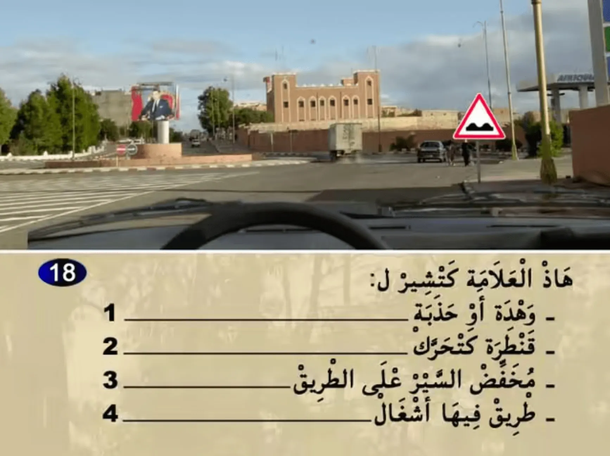
بيّن الجواب
الجواب الصحيح: 1
العلامة الطّرقية فهي تعني وجود وَهْدَة أو حَذَبَة على بعد 50 متر لأننا نتواجد وسط المدينة.
السؤال 19
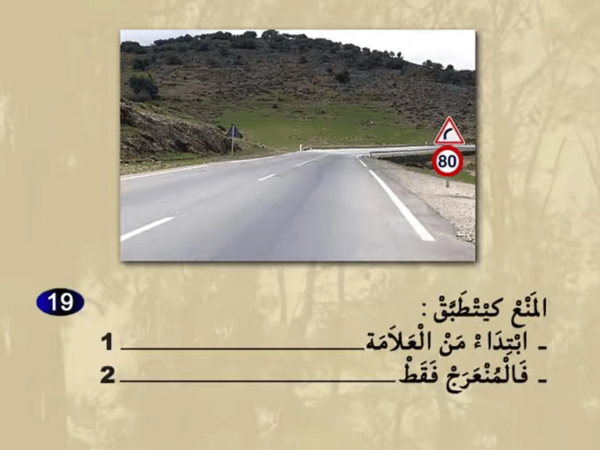
بيّن الجواب
الجواب الصحيح: 1
علامة المنع يتم تطبيقها دائما إبتداءً من العلامة الطّرقية. (يعني المنع من تجاوز سرعة 80 كلم في الساعة سوف يبتدأ من عند العلامة الطّرقية وليس في المنعرج فقط.
السؤال 20
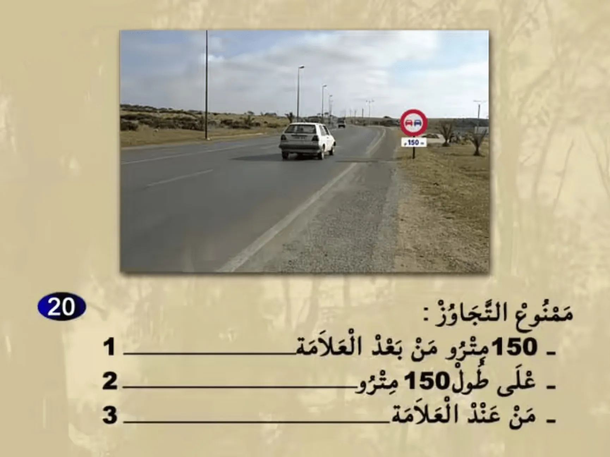
بيّن الجواب
الجواب الصحيح: 1
بالنسبة للعلامة الطّرقية ممنوع التجاوز، فيتم تطبيقها من عند العلامة، لكن يوجد علامة تكميلية أسفلها (150 متر) وهي تعني على أن المنع من التجاوز سوف يبدأ من بعد 150 متر وليس الان.
السؤال 21
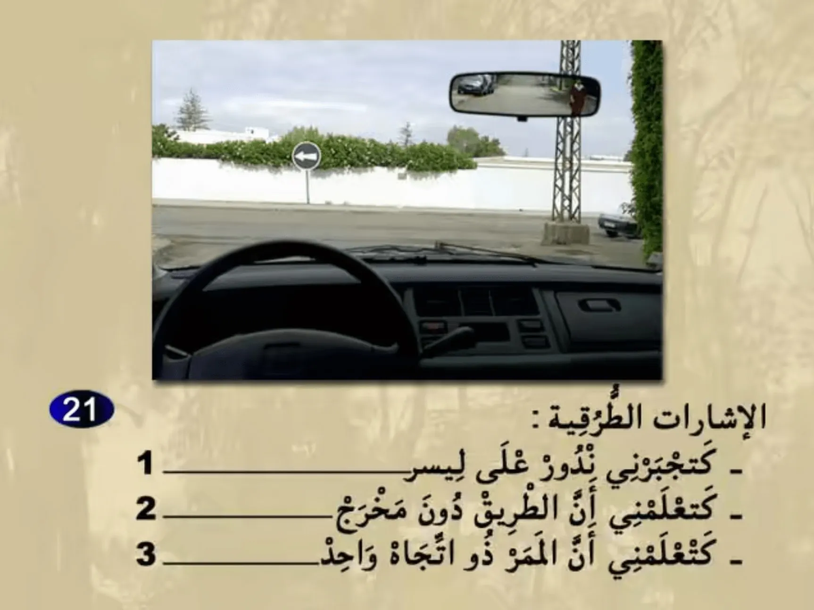
بيّن الجواب
الجواب الصحيح: 1
الإشارة الطّرقية تعني الإجبار، وفي هذه الحالة، الإشارة الطّرقية تجبرني على الإنعطاف لليسار (ممنوع الإنعطاف على اليمين).
السؤال 22
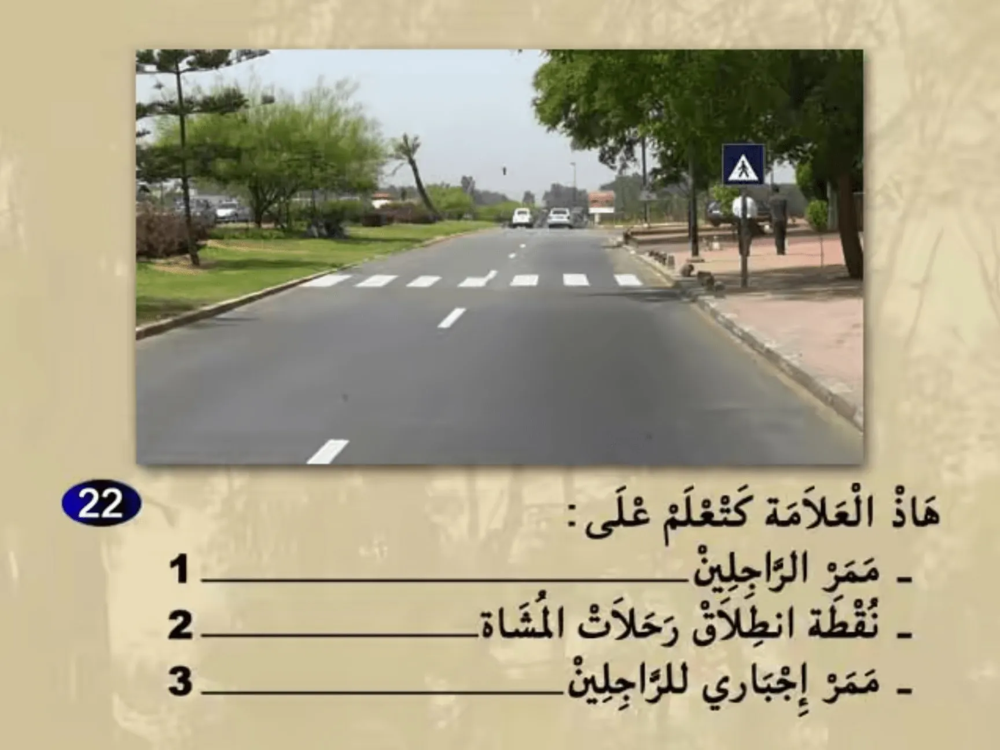
بيّن الجواب
الجواب الصحيح: 1
العلامة الطّرقية فهي تعني انه ممر خاص بالراجلين.
السؤال 23
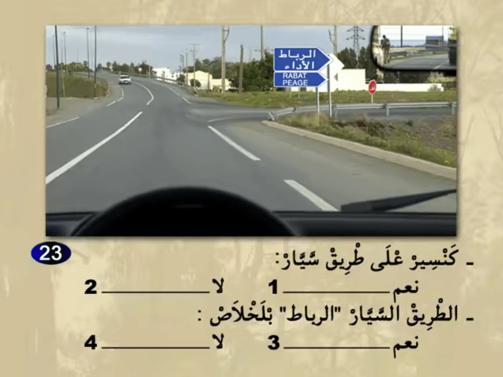
بيّن الجواب
الجواب الصحيح: 2 و 3
أنا الان لا أسير في الطّريق السيّار، العلامة الطّرقية تعني على أنني سوف أستعمل الطّريق السّيار لو قمت بتغيير الإتجاه لليمين. بالنسبة للطّريق السيّار فهو مدفوع وليس مجاني.
السؤال 24
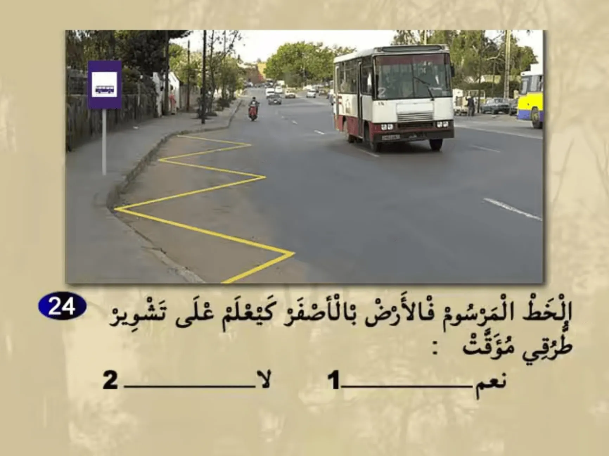
بيّن الجواب
الجواب الصحيح: 2
العلامة الطّرقية الموجودة على اليسار فهي تعني على أنه مكان خاص بالحافلات. بالنسبة للخط الأصفر المرسوم على الأرض فهو ليس مؤقت ولكنه دائما، وهو يشير على أن هذا المكان فهو خاص بالحافلات (لا يمكن الوقوف والتوقّف في هذا المكان الخاص بالحافلات).
السؤال 25
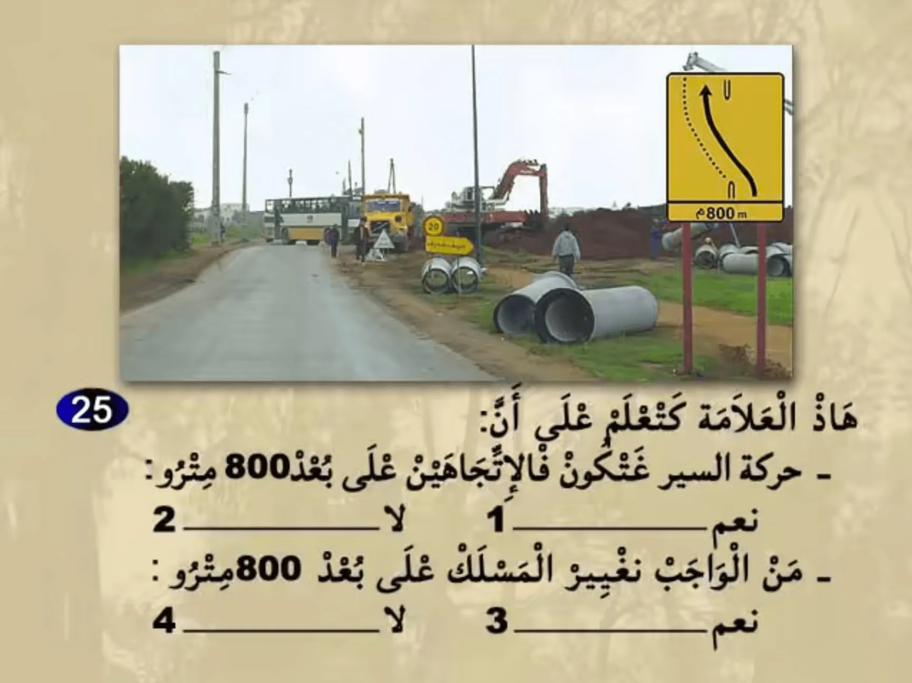
بيّن الجواب
الجواب الصحيح: 2 و 3
هذه العلامة الطّرقية لا تعني أن حركة السّير سوف تكون في الإتّجاهين على بعد 800 متر. كما أنه على بعد 800 متر (أي بعد إنتهاء مسافة 800 متر التي تشير إليها العلامة الطّرقية) فمن الواجب علينا تغيير المسلك.
السؤال 26
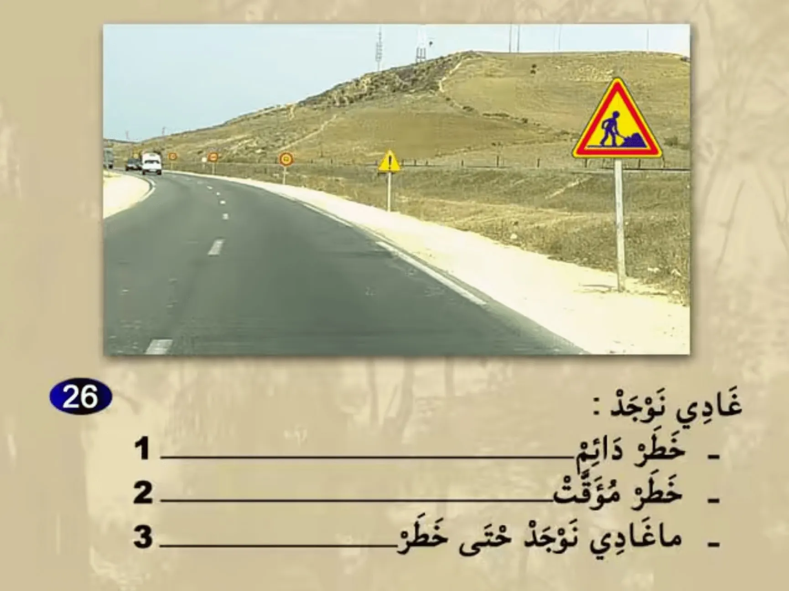
بيّن الجواب
الجواب الصحيح: 2
العلامات الطّرقية الصفراء فهي تشير إلى الأشغال، والخطر الذي يكون فهو خطر مؤقت لأنها علامات مؤقتة وليست علامات طرقية دائمة لكي نقول على أن الخطر دائم.
السؤال 27
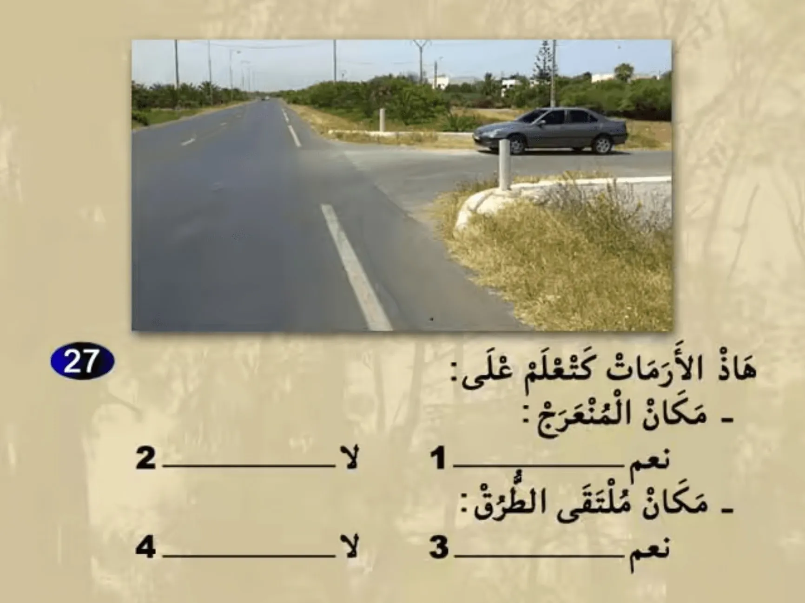
بيّن الجواب
الجواب الصحيح: 2 و 3
عندما نجد الأَرَمات كلّها باللّون الأبيض فهي تشير على أنه ملتقى الطّرق. (عندما يكون لون أحمر في أعلى الأَرَمات في هذه الحالة تشير إلى منعرج).
السؤال 28
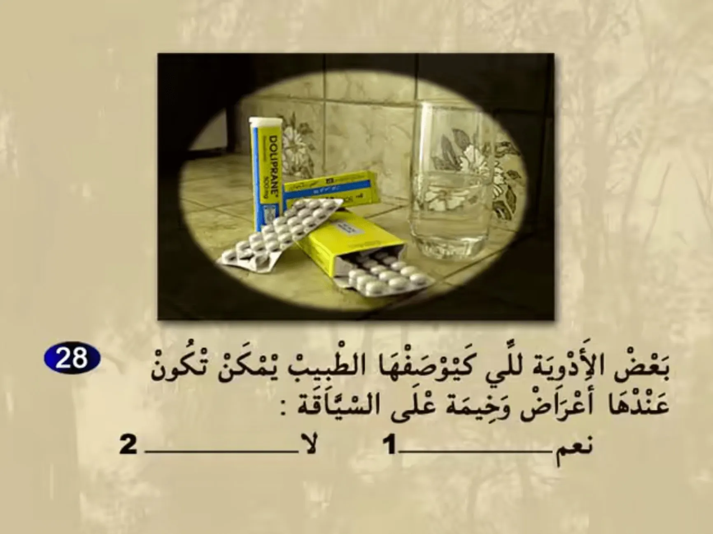
بيّن الجواب
الجواب الصحيح: 1
نعم يوجد بعض الأدوية التي تسبب أعراض وخيمة للسائق وتتسبب لها في النوم مثلا أثناء القيادة وعدم التّركيز.
السؤال 29
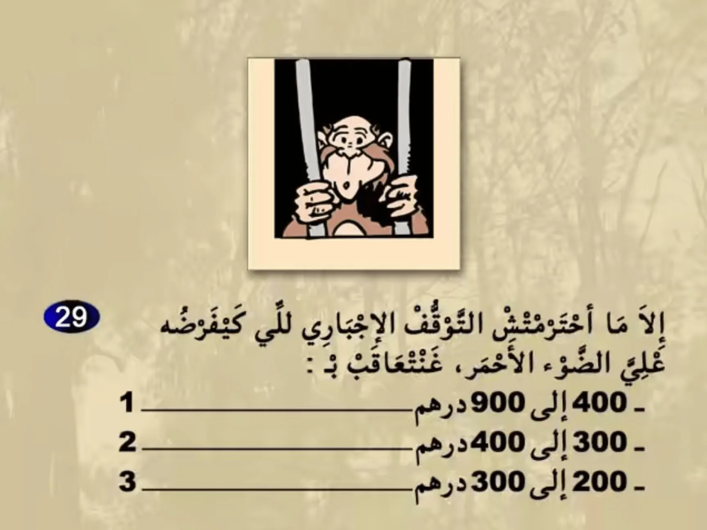
بيّن الجواب
الجواب الصحيح: 1
إذا لم أحترم التوقّف الإجباري الذي تَفْرِضُه الإشارة الضوئية الحمراء فإن الغرامة المالية تُقَدّر بين 400 درهم و 900 درهم.
السؤال 30
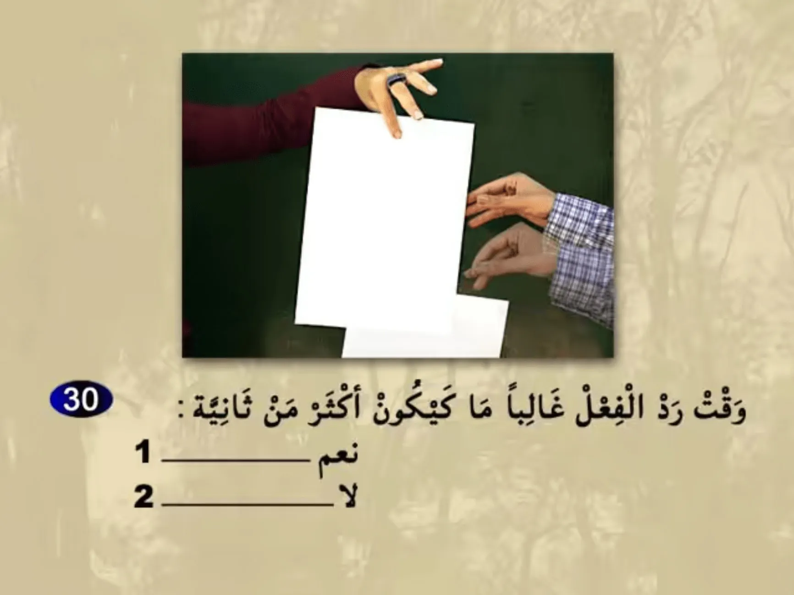
بيّن الجواب
الجواب الصحيح: 1
نعم، بالنسبة لوقت رد الفعل فغالبا ما يكون أكثر من ثانية.
السؤال 31
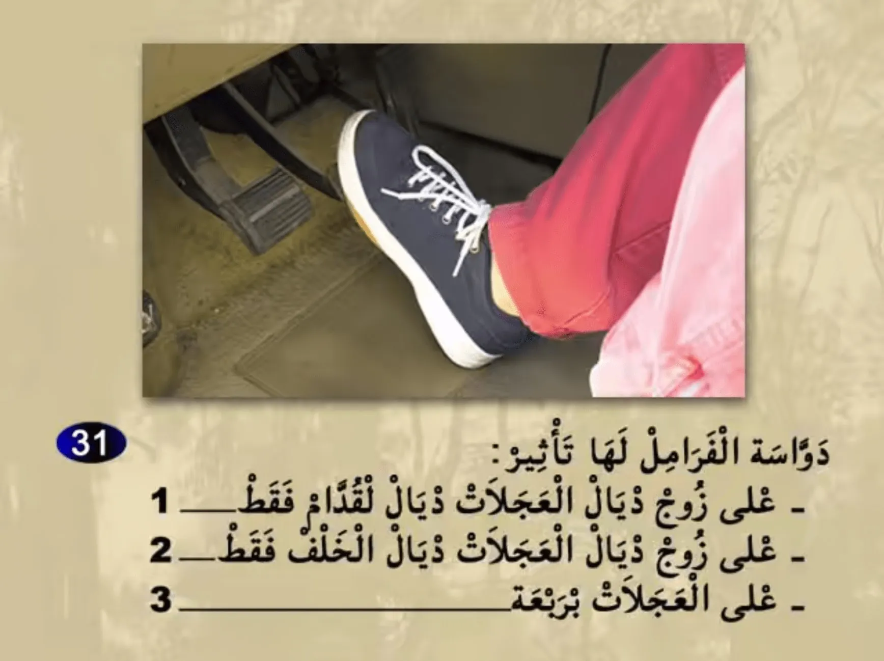
بيّن الجواب
الجواب الصحيح: 3
دَوّاسَة الفرامل لديها تأثير على جميع عجلات العربة الأربعة.
السؤال 32
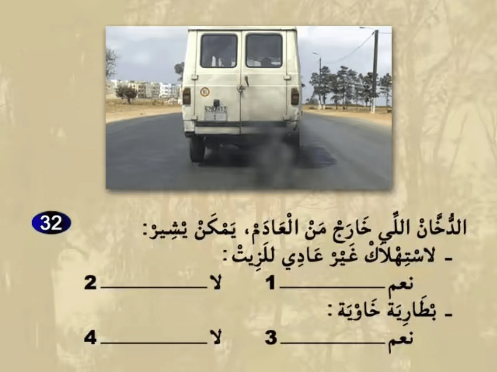
بيّن الجواب
الجواب الصحيح: 1 و 4
الدُّخان الذي يخرج من العادم فهو يشير على أن هنالك إستهلاك غير عادي للزيت، ولا يشير على أن البطارية فارغة.
السؤال 33
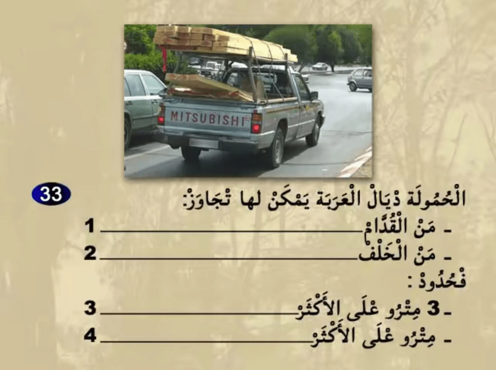
بيّن الجواب
الجواب الصحيح: 2 و 3
يمكن للحمولة التي نضعها فوق العربة أن تتجاوز العربة من الخلف فقط، والحمولة يمكن لها أن تتجاوز مسافة 3 أمتار من الخلف كحد أقصى.
السؤال 34
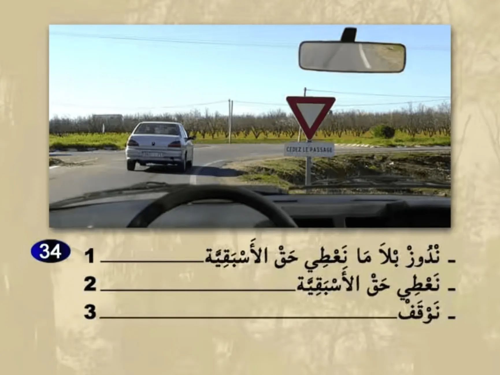
بيّن الجواب
الجواب الصحيح: 2
العلامة الطّرقية تعني على أنه ليس لدينا حق الأسبقية، إذن سوف أعطي حق الأسبقية للعربات الأخرى.
السؤال 35
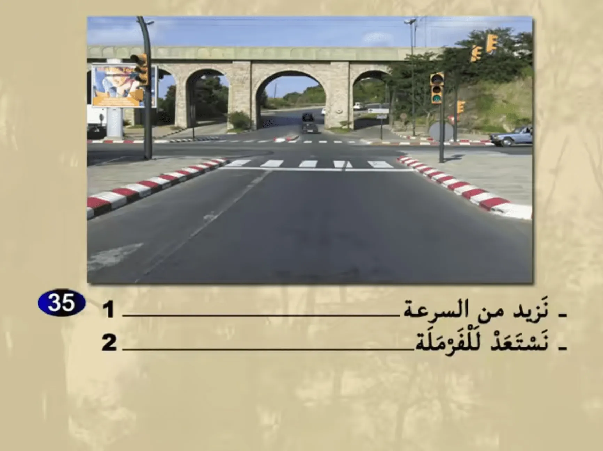
بيّن الجواب
الجواب الصحيح: 2
لا نقوم بزيادة السرعة في ملتقيات الطرق، في هذه الحالة وبما أننا نتواجد قرب ملتقى الطّرق وعلى الرّغم من أن الإشارة الضوئية خضراء فيجب علينا أن نستعد للفرملة تَحَسُّبًا لأي خطر قادم.
السؤال 36
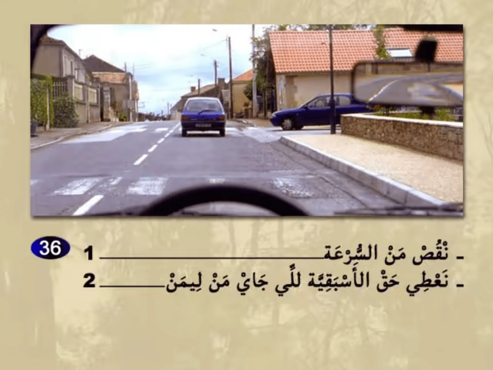
بيّن الجواب
الجواب الصحيح: 1 و 2
بما أن الأسبقية للعربات القادمة من الجهة اليمنى إذن فيجب علي أن أقوم بالإنقاص من السرعة وأن أعطي للعربة القادمة من اليمين حق الأسبقية.
السؤال 37
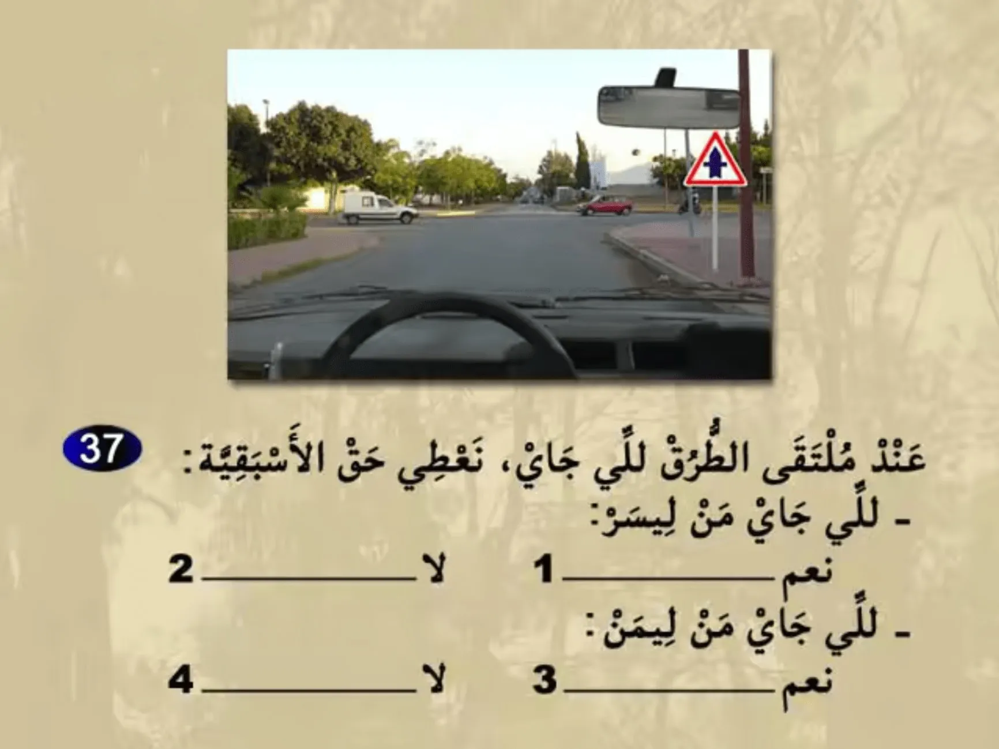
بيّن الجواب
الجواب الصحيح: 2 و 4
العلامة الطّرقية تعني إنتباه خطر طريق ذات أولوية المرور (طريق كبير في صغيرة) يجب الإنقاص من السرعة والمرور بدون أن أعطي الأسبقية للعربات القادمة من اليمين أو اليسار ( الأسبقية لي في هذه الحالة كما تشير إليه العلامة الطّرقية).
السؤال 38
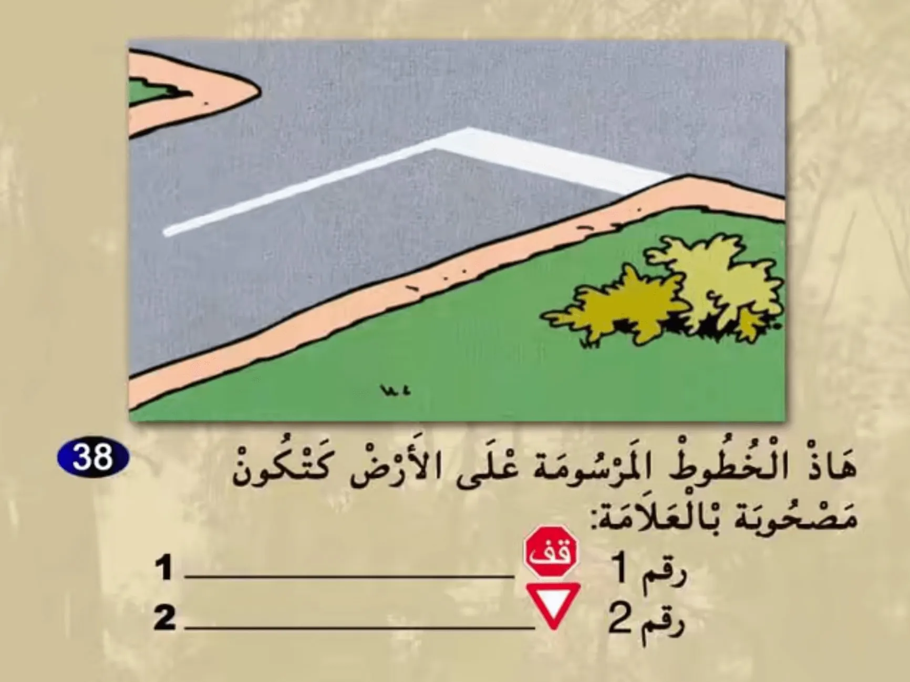
بيّن الجواب
الجواب الصحيح: 1
بالنسبة للخط المرسوم على الأرض فهو يعني الوقوف في ذلك المكان ودائما يكون مصحوب بالعلامة الطّرقية رقم 1 (قف).
السؤال 39
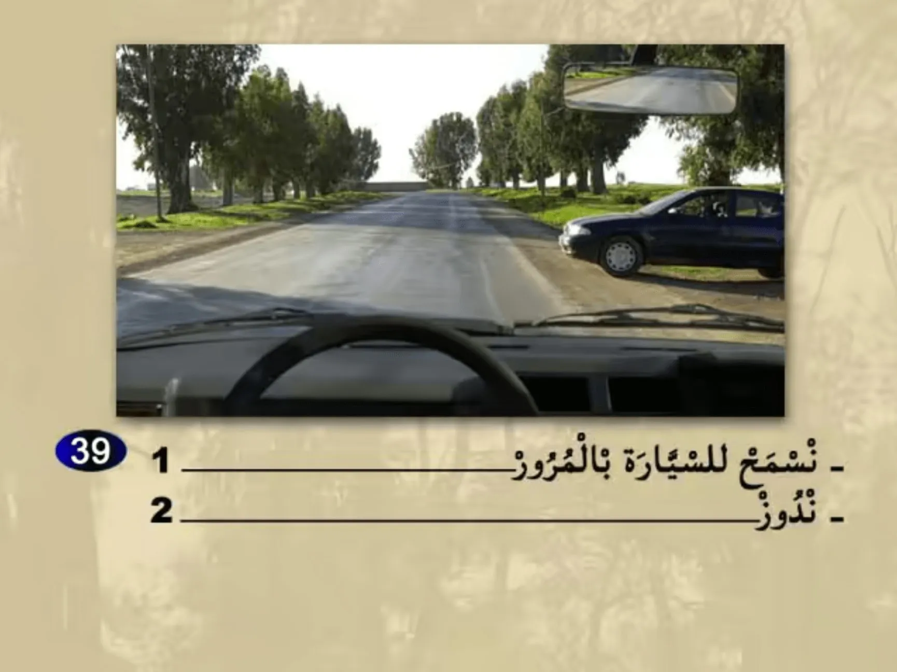
بيّن الجواب
الجواب الصحيح: 2
السيارة تتواجد في طريق غير مُعَبَّدة (la piste) في هذه الحالة الأسبقية لي على الرّغم من أنها تتواجد على الجهة اليمنى فيجب عليها الوقوف والإنتظار للمرور.
السؤال 40
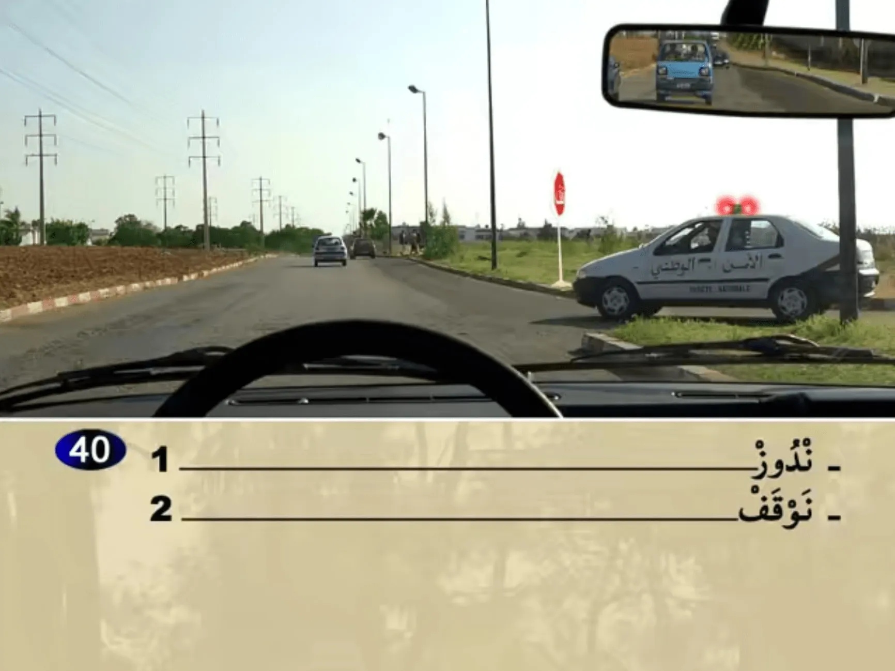
بيّن الجواب
الجواب الصحيح: 2
على الرَّغْم من أن سيارة الشرطة لديها علامة قف فيجب علينا الوقوف والسماح لها بالمرور لأنها في مُهِمة كما توضح الأضواء الحمراء فوق سيارة الشرطة (في هذه الحالة لو كانت الأضواء الحمراء فوق سيارة الشرطة لا تعمل أي أنها ليست في مهمّة في تلك الحالة يمكننا المرور أولا).